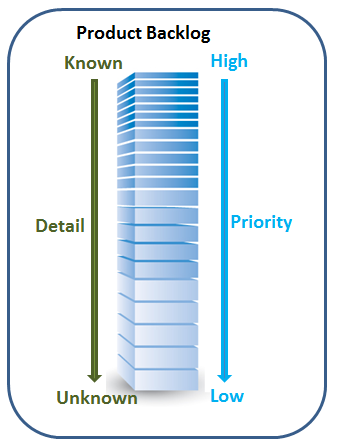
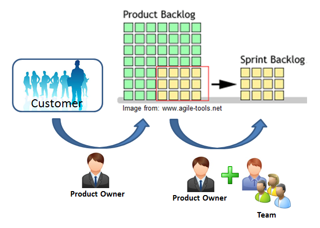

The product backlog is a list of every User Story and Epic
that has been idendified for the project. This backlog is the primary responsibility of the Product Owner,
who defines the user stories and prioritizes them.

The Product Backlog is sorted by priority, with the highest priority items at the top. The user stories at the top
(with highest priority) need to be detailed enough (and have all their relevant requirements attached to
them) so they are effectively ready for development. The user stories (or epics) lower on the backlog can be vague
and still without requirements. This will be improved as they move up on the backlog.

Together with the Product Owner, the Team decides during the Sprint Planning Session which backlog items to take out of the backlog for the upcoming sprint. These user stories
are then removed from the product backlog, so the lower priority stories automatically move up.
|